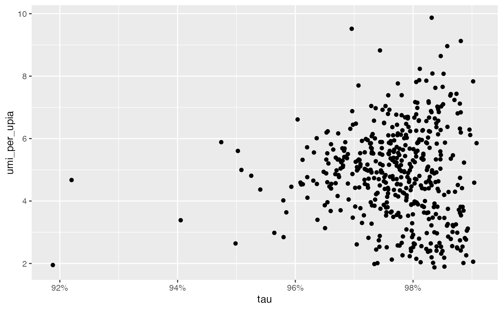

Load data
2023-12-18
load_data.RmdTip: you can turn off the verbose messages in pixelatorR
by setting:
options(pixelatorR.verbose = FALSE)In this tutorial, we will take a closer look at the functions that
pixelatorRprovides to load data. This is mainly intended for more advanced users. If you want to learn more about how to analyze MPX data, please visit our tutorials.
Load data
To get started, we need a pxl file which we can download
from https://software.pixelgen.com/.
dir.create("PBMC_data")
download.file(url = "https://pixelgen-technologies-datasets.s3.eu-north-1.amazonaws.com/mpx-datasets/pixelator/0.12.0/1k-human-pbmcs-v1.0-immunology-I/Sample01_human_pbmcs_unstimulated.dataset.pxl?download=1",
destfile = "PBMC_data/Sample01_human_pbmcs_unstimulated.dataset.pxl")pixelatorR provides several functions to load data from
a pxl file.
For instance, ReadMPX_counts allows us to load only the
count matrix and nothing else:
pxl_file <- "PBMC_data/Sample01_human_pbmcs_unstimulated.dataset.pxl"
countMatrix <- ReadMPX_counts(pxl_file)
countMatrix[1:5, 1:5]## RCVCMP0000000 RCVCMP0000002 RCVCMP0000003 RCVCMP0000005 RCVCMP0000006
## CD274 62 11 25 31 16
## CD44 553 180 66 347 213
## CD25 12 7 6 8 5
## CD279 4 2 0 8 2
## CD41 6 1 3 5 6With ReadMPX_item, we can chose a specific item to load
from the pxl file, including: “polarization”,
“colocalization”, “edgelist”.
polarization_scores <- ReadMPX_item(pxl_file, items = "polarization")
polarization_scores## # A tibble: 33,479 × 6
## morans_i morans_p_value morans_p_adjusted morans_z marker component
## <dbl> <dbl> <dbl> <dbl> <chr> <chr>
## 1 -0.00299 0.772 1.00 -0.290 ACTB RCVCMP0000830
## 2 -0.0161 0.177 0.771 -1.35 B2M RCVCMP0000830
## 3 0.0147 0.125 0.633 1.53 CD102 RCVCMP0000830
## 4 -0.00678 0.590 1.00 -0.539 CD11a RCVCMP0000830
## 5 0.000836 0.891 1.00 0.137 CD127 RCVCMP0000830
## 6 -0.00132 0.145 0.693 -1.46 CD150 RCVCMP0000830
## 7 -0.00103 0.395 1.00 -0.851 CD152 RCVCMP0000830
## 8 -0.00162 0.0365 0.265 -2.09 CD154 RCVCMP0000830
## 9 -0.000919 0.971 1.00 -0.0364 CD162 RCVCMP0000830
## 10 -0.000345 0.561 1.00 0.582 CD163 RCVCMP0000830
## # ℹ 33,469 more rowsIf we provide multiple items, ReadMPX_item returns a
list instead:
all_items <- ReadMPX_item(pxl_file, items = c("polarization", "colocalization", "edgelist"))
names(all_items)## [1] "polarization" "colocalization" "edgelist"Alternatively, we can use the wrapper functions
ReadMPX_polarization, ReadMPX_colocaliztion
and ReadMPX_edgelist to do the same thing as
ReadMPX_item:
polarization_scores <- ReadMPX_polarization(pxl_file)is equivalent to
polarization_scores <- ReadMPX_item(pxl_file, items = "polarization")Seurat
Perhaps the most useful function here is ReadMPX_Seurat
which allows us to load MPX data into a Seurat object with
some additional bells and whistles provided by
pixelatorR.
seur_obj <- ReadMPX_Seurat(pxl_file)Here, you have a few options to modify how the Seurat
should be created. First and foremost, we can set
return_cellgraphassay = FALSE to return a
Seurat object which only includes abundance
measurements.
In this simpler data set, only the count matrix is stored as an
Assay without any spatial data. This means that almost all
information that is unique to MPX will be ignored so you will not be
able to analyze or visualize graphs and there will be no way to explore
the spatial statistics.
However, this basic data set uses significantly less memory and is faster to process which can be useful if protein abundance is the only interesting data type for the analysis.
# Load simpler data set
seur_obj <- ReadMPX_Seurat(pxl_file, return_cellgraphassay = FALSE)
seur_obj[["mpxCells"]]## Assay data with 80 features for 477 cells
## Top 10 variable features:
## CD274, CD44, CD25, CD279, CD41, HLA-ABC, CD54, CD26, CD27, CD38By default, ReadMPX_Seurat returns the MPX data in an
object called CellGraphAssay. This object class extends the
Assay class from Seurat and is essentially an
Assay object with additional data slots. The
CellGraphAssay class will be covered in more detail later
in this tutorial.
Most additional parameters in ReadMPX_Seurat controls
the behavior when return_cellgraphassay = TRUE. By default,
the MPX polarization scores and colocalization scores are loaded and
stored in a CellGraphAssay named “mpxCells”.
seur_obj <- ReadMPX_Seurat(pxl_file)
seur_obj## An object of class Seurat
## 80 features across 477 samples within 1 assay
## Active assay: mpxCells (80 features, 80 variable features)
## 2 layers present: counts, dataSpatial metrics
We can fetch the polarization/colocalization score tables from the
Seurat object with the PolarizationScores and
ColocalizationScores methods:
# Fetch polarization scores
polarizaton_scores <- PolarizationScores(seur_obj)
polarizaton_scores %>% head()## # A tibble: 6 × 6
## morans_i morans_p_value morans_p_adjusted morans_z marker component
## <dbl> <dbl> <dbl> <dbl> <chr> <chr>
## 1 -0.00299 0.772 1.00 -0.290 ACTB RCVCMP0000830
## 2 -0.0161 0.177 0.771 -1.35 B2M RCVCMP0000830
## 3 0.0147 0.125 0.633 1.53 CD102 RCVCMP0000830
## 4 -0.00678 0.590 1.00 -0.539 CD11a RCVCMP0000830
## 5 0.000836 0.891 1.00 0.137 CD127 RCVCMP0000830
## 6 -0.00132 0.145 0.693 -1.46 CD150 RCVCMP0000830
# Fetch colocalization scores
colocalization_scores <- ColocalizationScores(seur_obj)
colocalization_scores %>% head()## # A tibble: 6 × 15
## marker_1 marker_2 pearson pearson_mean pearson_stdev pearson_z pearson_p_value
## <chr> <chr> <dbl> <dbl> <dbl> <dbl> <dbl>
## 1 ACTB ACTB 1 1 0 NA NA
## 2 ACTB B2M 0.324 0.317 0.0162 0.429 0.334
## 3 B2M B2M 1 1 0 NA NA
## 4 ACTB CD102 0.304 0.235 0.0167 4.17 0.0000151
## 5 B2M CD102 0.604 0.614 0.00966 -1.06 0.145
## 6 CD102 CD102 1 1 0 NA NA
## # ℹ 8 more variables: pearson_p_value_adjusted <dbl>, jaccard <dbl>,
## # jaccard_mean <dbl>, jaccard_stdev <dbl>, jaccard_z <dbl>,
## # jaccard_p_value <dbl>, jaccard_p_value_adjusted <dbl>, component <chr>An equivalent way to extract the polarization scores would be:
polarizaton_scores <- seur_obj[["mpxCells"]]@polarizationBut it’s good practice to use
PolarizationScores/ColocalizationScores which
is easier to read. One just have to make sure that the
DefaultAssay is set to “mpxCells”.
QC metrics
Component-specific metrics are stored in the @meta.data
slot of the Seurat object which can be accessed with double
brackets ([[]]):
colnames(seur_obj[[]])## [1] "antibodies" "edges" "leiden"
## [4] "mean_reads" "mean_umi_per_upia" "mean_upia_degree"
## [7] "median_reads" "median_umi_per_upia" "median_upia_degree"
## [10] "reads" "tau" "tau_type"
## [13] "umi" "umi_per_upia" "upia"
## [16] "upia_per_upib" "upib" "vertices"
## [19] "nCount_mpxCells" "nFeature_mpxCells"## antibodies edges leiden mean_reads mean_umi_per_upia
## RCVCMP0000000 77 23925 2 6.099645 8.179487
## RCVCMP0000002 72 6719 1 5.868135 3.857061
## RCVCMP0000003 78 8596 5 5.960330 3.653209
## RCVCMP0000005 79 17206 3 5.743520 4.782101
## RCVCMP0000006 76 21254 2 5.510445 5.413653
## RCVCMP0000007 69 6687 1 5.683565 5.195804
## mean_upia_degree median_reads median_umi_per_upia
## RCVCMP0000000 3.134359 5 5
## RCVCMP0000002 2.191160 5 3
## RCVCMP0000003 2.002550 5 2
## RCVCMP0000005 2.540578 5 3
## RCVCMP0000006 2.461793 5 3
## RCVCMP0000007 2.732712 5 3
## median_upia_degree reads tau tau_type umi umi_per_upia
## RCVCMP0000000 2 145934 0.9832869 normal 23645 8.083761
## RCVCMP0000002 2 39428 0.9734463 normal 6703 3.847876
## RCVCMP0000003 1 51235 0.9825753 normal 8548 3.632809
## RCVCMP0000005 2 98823 0.9733801 normal 17034 4.734297
## RCVCMP0000006 2 117119 0.9864106 normal 21032 5.357106
## RCVCMP0000007 2 38006 0.9710634 normal 6667 5.180264
## upia upia_per_upib upib vertices nCount_mpxCells
## RCVCMP0000000 2925 2.881773 1015 3940 23925
## RCVCMP0000002 1742 2.927731 595 2337 6719
## RCVCMP0000003 2353 3.994907 589 2942 8596
## RCVCMP0000005 3598 2.784830 1292 4890 17206
## RCVCMP0000006 3926 2.918959 1345 5271 21254
## RCVCMP0000007 1287 2.508772 513 1800 6687
## nFeature_mpxCells
## RCVCMP0000000 77
## RCVCMP0000002 72
## RCVCMP0000003 78
## RCVCMP0000005 79
## RCVCMP0000006 76
## RCVCMP0000007 69We can for instance explore QC metrics visually for component filtering:
ggplot(seur_obj[[]], aes(tau, umi_per_upia)) +
geom_point() +
scale_x_continuous(labels = scales::percent)
Edge list
The edge list represents the raw MPX data where each row corresponds to an edge formed between a UPIA and a UPIB pixel. This information is rarely needed for analysis, but is required if we want to load and explore component graphs.
ReadMPX_Seurat doesn’t load the edge list in memory,
instead it creates a copy of the raw file (parquet) to a directory. The
path to this directory is stored in the CellGraphAssay
object and can be accessed with:
ArrowDir(seur_obj)## ./edgelists/5LJu5-2024-03-08-142913By default, a directory called edgelists is created in
the current working directory. Inside this directory, the edgelist is
stored in a sub directory with a unique name.
You can set the global option pixelatorR.arrow_oudir to
any existing directory. For instance, if you want to use a temporary
directory, you can use:
The downside with using a temporary directory is that it will be cleared if the R session crashes or is restarted. On the flip side, you don’t have to worry about cleaning up the edgelists directory which can get cluttered when subsetting or merging data (see subset and merge tutorial for more information).
Let’s take a closer look at the contents of the edge list directory:
## /Users/ludviglarsson/r-pixelator-packages/pixelatorR/vignettes/edgelists/5LJu5-2024-03-08-142913
## └── sample=S1
## └── edgelist.parquetThe sub directory of the edgelists directory contains a folder called “sample=S1” with the edge list file for our data set.
The arrow R package makes it easy to access data from
our edge list file. Please take a look at their package website for more
details.
Our CellGraphAssay keeps a
FileSystemDataset object which we can use to load edge list
data in memory when needed. For example, we can extract the top 10 rows
with:
## # A tibble: 10 × 10
## upia upib umi marker sequence count umi_unique_count upi_unique_count
## <chr> <chr> <chr> <chr> <chr> <int> <int> <int>
## 1 ATTAGAAG… TATA… GCGT… CD48 GACCACTC 28 1 1
## 2 TTAACATA… CGAT… ACTG… CD48 GACCACTC 26 1 1
## 3 AAAAATAC… GGTC… GCAG… CD48 GACCACTC 26 1 1
## 4 ATTTGTTT… TGTT… AGAT… CD48 GACCACTC 26 1 2
## 5 TTTAGCGT… GTGC… CTCC… CD48 GACCACTC 25 1 2
## 6 ACTTCGTT… GTCA… AACG… CD48 GACCACTC 25 1 3
## 7 CCAAATTC… TAGT… GTAC… CD48 GACCACTC 25 1 1
## 8 GTGAACAA… TCCT… TTAA… CD48 GACCACTC 24 1 1
## 9 GAAGATAT… AAGC… TGCA… CD48 GACCACTC 24 1 1
## 10 ACCGGACA… GGAT… ACTT… CD48 GACCACTC 24 1 1
## # ℹ 2 more variables: component <chr>, sample <chr>Note that the collect verb is required to load the data
in memory as a tbl_df (tibble) object.